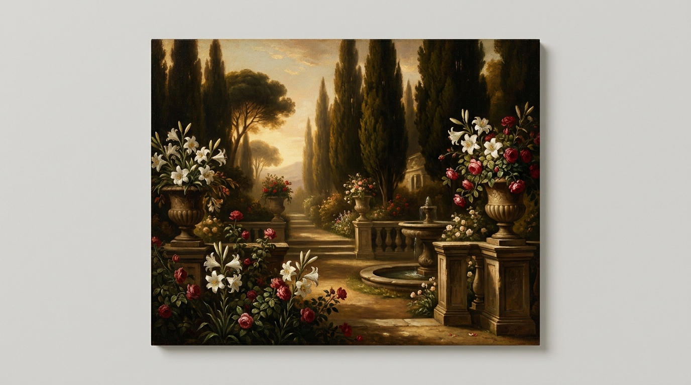
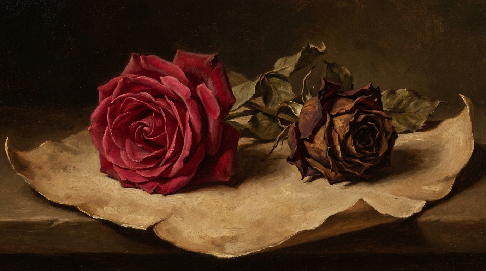
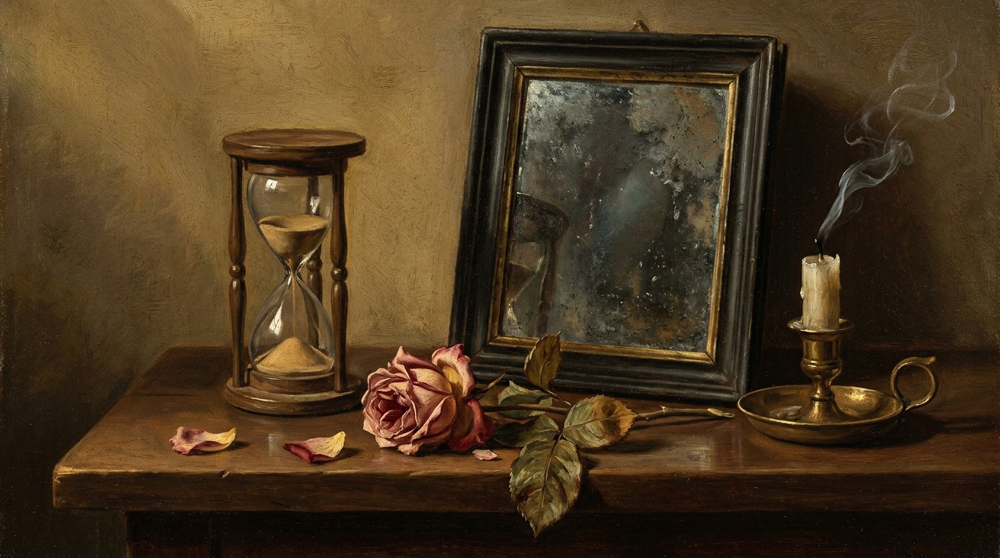

Interpretar el sentido de figuras literarias y tópicos en sonetos del Siglo de Oro, fundamentando cada respuesta con versos del texto.
Cuando un poema dice algo raro, no está decorando. Está diciendo en dos palabras algo que en lenguaje normal costaría un párrafo. Tu trabajo es traducir ese atajo y mostrar dónde lo dice.
| Figura | Cómo se reconoce | Ejemplo |
|---|---|---|
| Comparación | Hay un nexo: como, igual que, cual, parece | «sus ojos como dos luceros» |
| Metáfora | Se identifican dos cosas sin nexo: A es B | «la nieve de su cumbre» (las canas) |
| Metonimia | Se nombra algo por otra cosa cercana o relacionada | «beber una copa» (el vino, no el vidrio) |
| Sinécdoque | Se nombra la parte por el todo, o al revés | «cien almas llegaron al puerto» |
| Símbolo | Un objeto concreto representa una idea abstracta | la rosa como belleza que se acaba |
| Figura | Cómo se reconoce | Ejemplo |
|---|---|---|
| Antítesis | Dos ideas contrarias, una al lado de la otra | «áspero, tierno» |
| Oxímoron | Dos palabras que se contradicen, pegadas | «veneno por licor suáve» |
| Paradoja | Una frase entera que parece imposible y aun así dice algo cierto | «un cielo en un infierno cabe» |
| Ironía | Se dice lo contrario de lo que se quiere dar a entender | «¡qué puntual, solo dos horas tarde!» |
| Figura | Cómo se reconoce | Ejemplo |
|---|---|---|
| Anáfora | La misma palabra al inicio de varios versos | «En tanto que… / y en tanto que…» |
| Aliteración | Se repite un sonido y produce un efecto | «el susurro de la selva» |
| Enumeración | Lista de elementos seguidos | «mueve, esparce y desordena» |
| Gradación | Enumeración que sube o baja de intensidad | «en tierra, en humo, en polvo, en sombra, en nada» |
| Polisíndeton | Se repite la conjunción a propósito | «y corre y salta y grita» |
| Figura | Cómo se reconoce | Ejemplo |
|---|---|---|
| Hipérbaton | El orden normal de la frase está alterado | «del monte en la ladera» (en la ladera del monte) |
| Asíndeton | Se quitan las conjunciones que corresponderían | «leal, traidor, cobarde» |
| Elipsis | Se omite una palabra que igual se entiende | «yo llegué temprano; ella, tarde» |
| Encabalgamiento | La frase no cabe en el verso y sigue en el siguiente | «el cabello, que en la vena / del oro se escogió» |
| Figura | Cómo se reconoce | Ejemplo |
|---|---|---|
| Hipérbole | Exageración imposible | «te lo dije un millón de veces» |
| Personificación | Un objeto o una idea hace algo humano | «el tiempo airado» |
| Epíteto | Adjetivo que no informa nada nuevo: realza | «la blanca nieve» |
| Sinestesia | Se cruzan dos sentidos distintos | «un silencio áspero» |
| Apóstrofe | El hablante interpela directamente a alguien | «¡oh tiempo, detén tu vuelo!» |

| Versos | 14 en total |
| Estrofas | 2 cuartetos (4 versos) + 2 tercetos (3 versos) |
| Medida | Endecasílabos: 11 sílabas cada verso |
| Rima | Consonante: ABBA ABBA CDE CDE |
| Estructura | Los cuartetos plantean; los tercetos resuelven o dan el giro |
Un tópico es un tema que vuelve una y otra vez en la literatura, con nombre propio en latín. Reconocerlo te da la mitad de la interpretación hecha.

| Tópico | Qué dice | Cómo se nota en el poema |
|---|---|---|
| Carpe diem | Aprovecha el día, la vida es breve | Manda a gozar ahora, antes de que sea tarde |
| Collige, virgo, rosas | Corta las rosas mientras puedas | Se dirige a una joven y le habla de su belleza pasajera |
| Tempus fugit | El tiempo huye sin detenerse | Aparecen el paso de las estaciones, la nieve, la vejez |
| Ubi sunt | ¿Dónde están los que ya no están? | Preguntas por un pasado glorioso que se perdió |
| Memento mori | Recuerda que vas a morir | Calaveras, relojes, velas que se apagan |
| Locus amoenus | El lugar apacible y perfecto | Prado verde, agua clara, sombra, pájaros |
| Descriptio puellae | Retrato ideal de la mujer amada | Se describe de arriba abajo: cabello de oro, cuello blanco |
| Beatus ille | Feliz quien vive lejos del ruido | Elogio de la vida sencilla en el campo |
Cuatro casos sueltos para probar la regla. Se corrigen solos apenas respondes.
Garcilaso de la Vega (1501-1536) · España, Renacimiento. Texto de dominio público.
En tanto que de rosa y azucena
se muestra la color en vuestro gesto,
y que vuestro mirar ardiente, honesto,
con clara luz la tempestad serena;
y en tanto que el cabello, que en la vena
del oro se escogió, con vuelo presto
por el hermoso cuello blanco, enhiesto,
el viento mueve, esparce y desordena:
coged de vuestra alegre primavera
el dulce fruto antes que el tiempo airado
cubra de nieve la hermosa cumbre.
Marchitará la rosa el viento helado,
todo lo mudará la edad ligera
por no hacer mudanza en su costumbre.
Responde marcando una alternativa. Puedes cambiarla las veces que quieras.
Lope de Vega (1562-1635) · España, Barroco. Texto de dominio público.
Desmayarse, atreverse, estar furioso,
áspero, tierno, liberal, esquivo,
alentado, mortal, difunto, vivo,
leal, traidor, cobarde y animoso;
no hallar fuera del bien centro y reposo,
mostrarse alegre, triste, humilde, altivo,
enojado, valiente, fugitivo,
satisfecho, ofendido, receloso;
huir el rostro al claro desengaño,
beber veneno por licor suáve,
olvidar el provecho, amar el daño;
creer que un cielo en un infierno cabe,
dar la vida y el alma a un desengaño;
esto es amor, quien lo probó lo sabe.
Responde marcando una alternativa. Puedes cambiarla las veces que quieras.
Vuelve a mirar los dos poemas antes de responder. El SIMCE siempre pregunta por dos textos que se cruzan.
Elige una figura de cualquiera de los dos sonetos y explica qué sentido construye. Formato obligatorio, el mismo que se pide en la prueba:
En el Soneto XXIII hay una metáfora en el verso «cubra de nieve la hermosa cumbre». La nieve no es nieve real: está puesta en lugar de las canas, y la cumbre, en lugar de la cabeza. Lo que se traslada es el color blanco y la altura. Con eso el poema logra decir «vas a envejecer» sin nombrar nunca la vejez, y encadena la imagen con la «primavera» del verso anterior, de modo que la vida entera queda contada como el paso de las estaciones.
¿Qué idea del paso del tiempo o del amor propone cada soneto? Escribe un párrafo comparando los dos, con una cita de cada uno.
Los dos sonetos describen una fuerza que el hablante no gobierna. En Garcilaso es el tiempo: «todo lo mudará la edad ligera / por no hacer mudanza en su costumbre», es decir, todo cambia porque el tiempo nunca cambia su manera de actuar. En Lope es el amor, que arrastra a estados contrarios a la vez: «leal, traidor, cobarde y animoso». La diferencia está en qué hacen con eso: Garcilaso saca una orden, gozar ahora, mientras que Lope no aconseja nada y termina reconociendo que esto solo se entiende viviéndolo, «quien lo probó lo sabe».
Esto es lo que mide el SIMCE. Tu resultado por eje aparece al responder las 14 preguntas:
La habilidad donde falles más es tu foco de práctica de la semana.